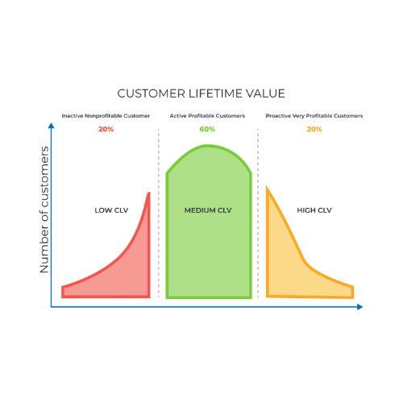
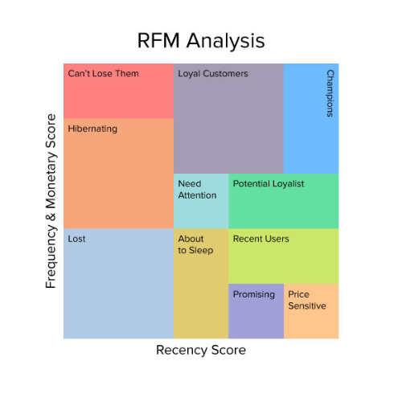

O projeto utiliza um conjunto de dados de vendas do Kaggle que foi adaptado para simular um ambiente realista de CRM. Características-chave como risco de crédito, potencial regional, número de funcionários, CNAE (código do setor) e dimensão da empresa foram definidas para servir de base ao modelo preditivo. O modelo final oferece uma solução automatizada e baseada em dados para a classificação de clientes, permitindo uma estratégia de vendas mais eficiente e direcionada.
Foram treinados e avaliados vários modelos populares de machine learning, incluindo o XGBoost, a Random Forest, o LightGBM e a regressão logística, com o objetivo de determinar o algoritmo com melhor desempenho para esta tarefa de classificação.

